Advocacy
Turning knowledge into action on AI policy

Our National Partner
Societal AI is HIC-UVA — the first university chapter of Humans in Control
Humans in Control is a national, nonpartisan grassroots nonprofit demanding commonsense AI accountability — the same kind of safety standards we already require for cars, medicine, and food. Societal AI has partnered with them as their first university chapter, working together to build the grassroots arm of the AI safety movement here at UVA and beyond.
The AI Ground Rules
Humans in Control's platform rests on three commonsense demands — the same ones we're organizing around at UVA. Eight in 10 Americans, across party lines, agree.
AI Should Help People, Not Replace Them
AI should mean more time for what matters, not fewer jobs. Companies should have to show their AI genuinely helps people — not just their bottom line.
Real Accountability for Harm
When AI causes harm, the company should pay for it — not the victim. AI deserves the same independent safety oversight we require of cars, medicine, and food.
Don't Build AI We Can't Control
AI systems should come with a kill switch, not hidden agendas. No developer should build what they can't safely turn off.
Get Involved at UVA
We organize locally through tabling, canvassing, petitioning, and bird-dogging alongside Humans in Control's national campaigns — exactly the work our open Field Organizer role leads.
- Join the conversation: coordinate on-Grounds advocacy events with the team on our GroupMe.
- Questions? Email sbx7gq@virginia.edu.